Research & architecture
Documented concepts and technical investigations across eleven program areas.
Independent thinking. Industrial ambition.
The next industrial frontier is hidden in the physics we haven’t put to work.
Simic Energy Labs is an AI-native invention laboratory exploring new possibilities across energy, matter, space, and computation.
01 / RESEARCH FRONTIERS
What becomes possible when we look beyond an industry’s familiar operating conditions? Explore the architectures we are investigating.
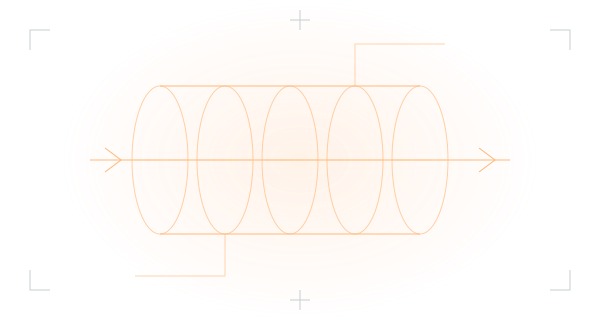
Combustion Redefined
Exploring new reaction pathways to extract more useful value from fuels before combustion.
Research & modeling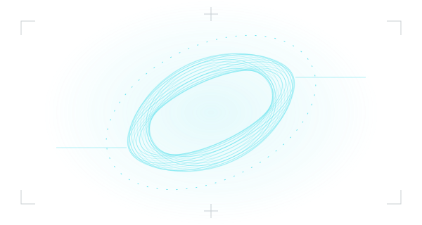
Plasma Stability
Investigating rotating plasma architectures, diagnostics, and the conditions for repeatable control.
Architecture in development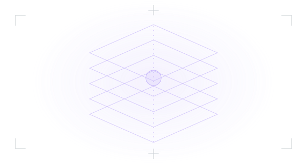
High-Density Fuels & Power
Research into advanced materials, isotope production, and future energy-storage architectures.
Concept development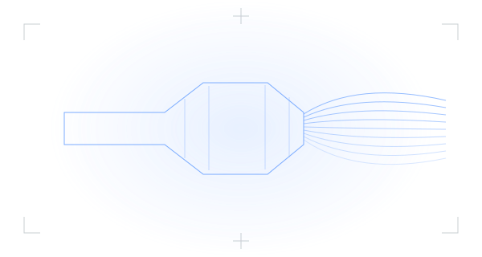
Electric Rockets
Exploring high-power electric propulsion as a complete power, thermal, and vehicle system.
Architecture in development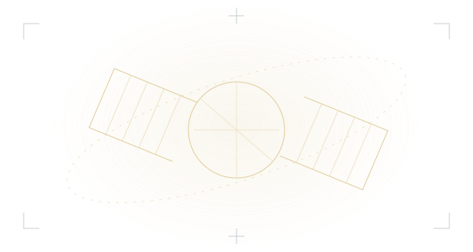
Space Infrastructure
Concepts for lunar resources, orbital energy routing, radiation shielding, and thermal management.
System design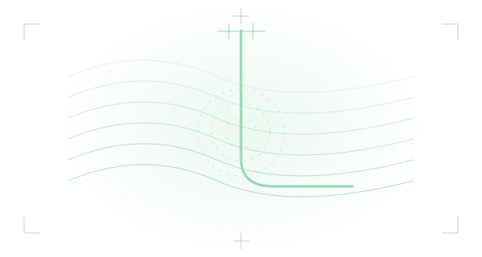
Subsurface & Beyond
Investigating subsurface processes and measurements for hydrogen, helium, and new resource decisions.
Research framing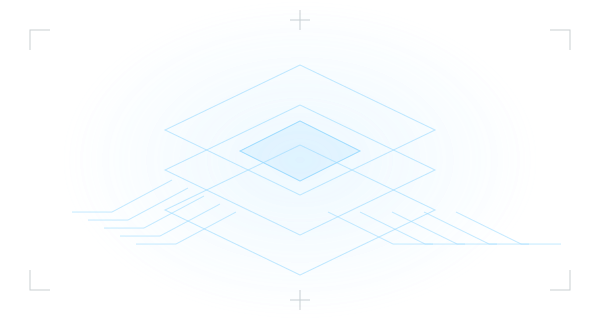
Exponential Computing
Exploring cryogenic, photonic, and quantum architectures for the next generation of computation.
Pre-demonstration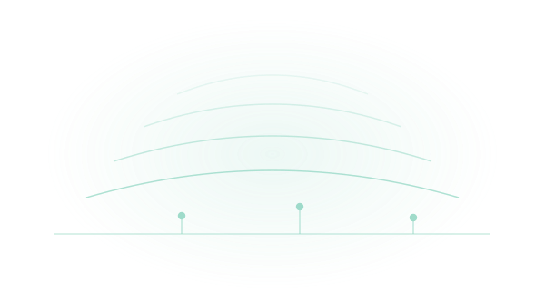
Atmospheric Science
Investigating atmospheric processes and sensing at climate scale — for prediction, and eventually, intervention.
Research framing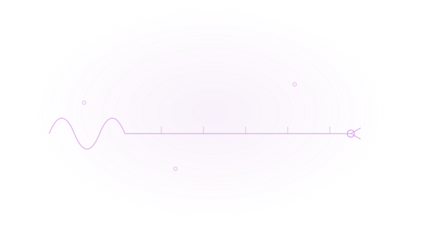
Longevity
Exploring the physical basis of aging and survival on interstellar timescales.
Research framing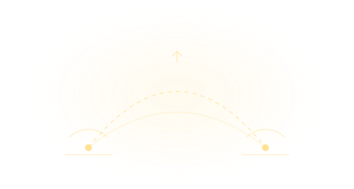
Post-Satellite Communication
Investigating communication that needs no satellites and leaves no signal to find.
Concept development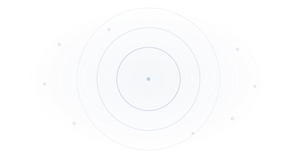
Vacuum Science
Probing the physics of empty space — from ultra-high vacuum engineering to what the vacuum itself may hold.
Research framingDifferent industries. Shared physical principles. A method built to investigate what lies between them.
Read the full research briefing ↗Illustrations are conceptual. Program labels describe development activity, not demonstrated performance.
RETHINKING FUEL CONVERSION
What if we could recover more chemical value before the flame? Our combustion program investigates reaction pathways in supercritical water and the opportunity to select useful outputs before combustion.
A controlled bench experiment measuring hydrogen yield against a matched thermal baseline, with complete mass and energy accounting.
02 / THE DISCOVERY SYSTEM
AI-assisted investigation. Explicit assumptions. Decisive tests. Each stage turns a larger question into a better next decision.
Define the useful output, the customer’s problem, and the physical boundaries. Account for inputs, losses, operating conditions, and the performance that actually matters.
OUTPUT / A bounded question and a measurable baseline.
03 / FROM POSSIBILITY TO EVIDENCE
SEL is an early-stage, founder-led laboratory in development. Current work centers on research, technical architectures, modeling, and experiment planning. Independent experimental validation is a next-stage objective.
Examine the evidence framework ↗Documented concepts and technical investigations across eleven program areas.
Specialist review and controlled experiments to evaluate the strongest candidate mechanisms.
Proposed pathways through research engagements, licensing, and industrial collaboration.
04 / THE INSTITUTION WE ARE BUILDING
Founded by Milan Simic, SEL brings an industrial and financial perspective to frontier research. Our ambition is to connect disciplines, identify consequential questions, and build the evidence needed to turn promising architectures into useful technology.
05 / BUILD WHAT COMES NEXT
The next useful connection might start with an industrial constraint, an experimental capability, or a different way of seeing the problem.